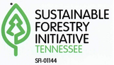

Tennessee
Find rare and endangered species in your area! Take care of our forests by supporting biodiversity. Loggers, landowners, and Tennesseans know what could be on your land and get additional resources.
Select a county to filter known rare species. Hold down a county to select multiple.
Choose a species group in the filter bar to narrow down your search.
Find out more about species with more resources. ↓